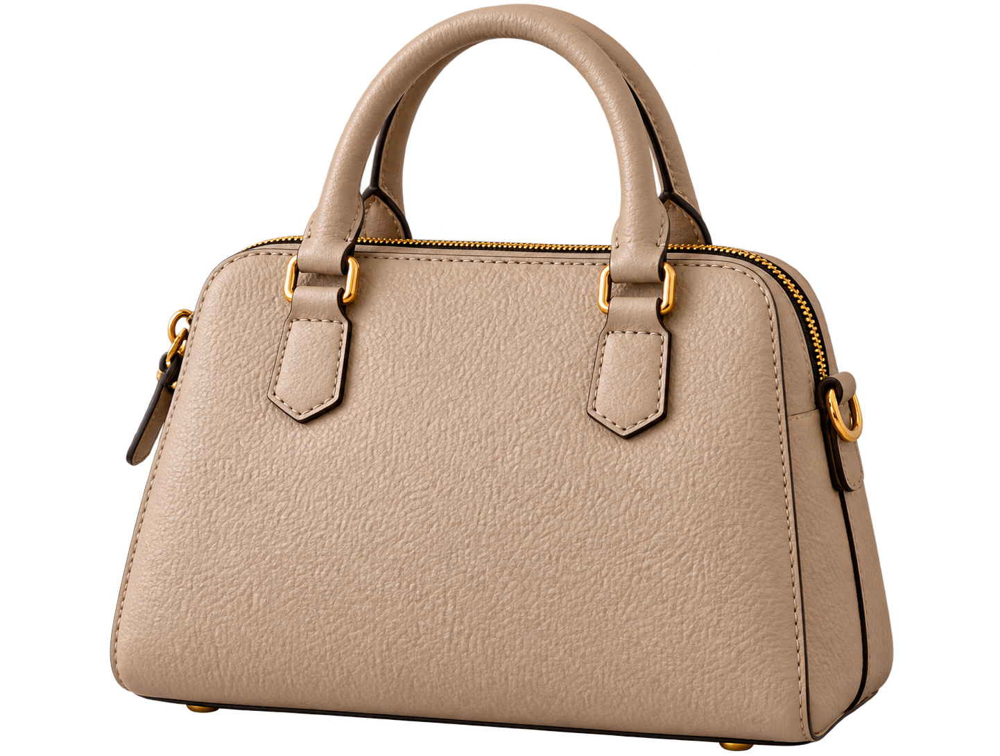

レンズと商品をきれいに
スマホのレンズを柔らかい布で拭き、商品についたほこりを取り除きます。服は形を整え、素材に合う方法でシワを整えてから撮影します。
写真で伝えるのは、
商品の魅力と、今の状態。
まずは手持ちのスマホと、明るく片付いた場所から。きれいに見せるだけでなく、購入する人が確認したい部分を写していきましょう。
スマホのレンズを柔らかい布で拭き、商品についたほこりを取り除きます。服は形を整え、素材に合う方法でシワを整えてから撮影します。
窓から入る、直射日光の当たらない明るい光が撮りやすい環境です。強い日差しはレースカーテンでやわらげます。夜はライトの位置を動かし、影と色を確認しましょう。
白・薄いグレーなど無地の背景を基本に、商品と区別できる色を選びます。白い商品なら薄いグレーも便利。生活用品や個人情報が写らないよう片付けます。
最初の写真は何の商品かが分かる全体像に。端を切らず、周りに少し余裕を残します。小さな商品はスマホを近づけ、ピントが合う距離で撮ります。
商品にピントを合わせ、両手でスマホを支えます。撮った写真を拡大して、文字・輪郭・細部がぼやけていないか確認します。脇を軽く締めて構え、スマホが動かないように撮りましょう。
フラッシュや強いフィルターは、色や質感が変わることがあります。明るさを調整するときも、白飛びや色の変化を確認。傷・汚れを加工で消さないようにします。
撮影用の花や小物は、販売品と混同されないように。「撮影小物は付属しません」など、必要に応じて商品説明にも記載しましょう。セット商品は、実際に届くものが分かる写真を用意します。
同じバッグを同じ大きさで配置しています。背景による見え方の違いを見比べてください。

家具や生活用品が写り込み、背景に目が散ってしまう。
無地の背景なら、バッグの形や状態に集中して見られる。
まず全体の中でどこに傷があるかが分かる写真、そのあとに傷をアップで撮った写真を用意します。説明文にも、場所・大きさ・状態を添えましょう。
該当する商品を開いて、撮れた項目にチェック。必要な写真は商品の状態によって追加しましょう。
平置き・ハンガー掛けなど、形が分かる置き方で。前後とも袖や裾を整えます。
外側だけでなく内側や底も。靴は左右をそろえて全体が分かるようにします。
型番や接続部分も大切です。動作写真だけで全機能の保証にはならないため、確認した内容は説明文にも書きます。
光が強く反射する場合は、光やカメラの角度を変えます。割れ物は安定した場所に置きましょう。
セットの数や不足がないかを先に確認し、届く内容が分かるように並べます。
チェックは、このページを開いている間の確認用です。
定規を添えると大きさの目安になりますが、角度によって見え方は変わります。測った寸法と単位も商品説明に記載しましょう。
写真の順番は「全体 → 別の角度 → 詳細 → 傷や汚れ → 付属品」を目安に、分かりやすい流れへ。目立つ傷など購入判断に大切な情報は、見つけやすい位置に載せましょう。
洋服の測り方は「アパレル採寸ガイド」へ →写真で伝えきれない部分は「メルカリ販売ワード集」へ →
具体的な始め方を、もっと詳しく知りたい方へ。
公式LINEに戻って「無料勉強会」と送ってください。